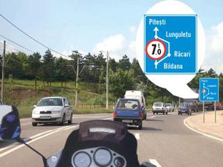

nr.2 Pentru care dintre faptele de mai jos se aplica masura retinerii permisului de conducere?

- A. pentru neoprirea la semnalul regulamentar al politistului
- B. pentru nerespectarea dispozitiilor legale referitoare la depasire
- C. pentru nerespectarea normelor privind folosirea luminilor pe timp de noapte
Ultimele postari:
- nr.1 Pentru care dintre faptele de mai jos se aplica masura retinerii permisului de conducere?
- nr.2 Pentru care dintre faptele de mai jos se aplica masura retinerii permisului de conducere?
- 18 categorii de permis auto
- Cateva reguli de retinut privind trecerea la nivel cu calea fearata
- Bine ati venit